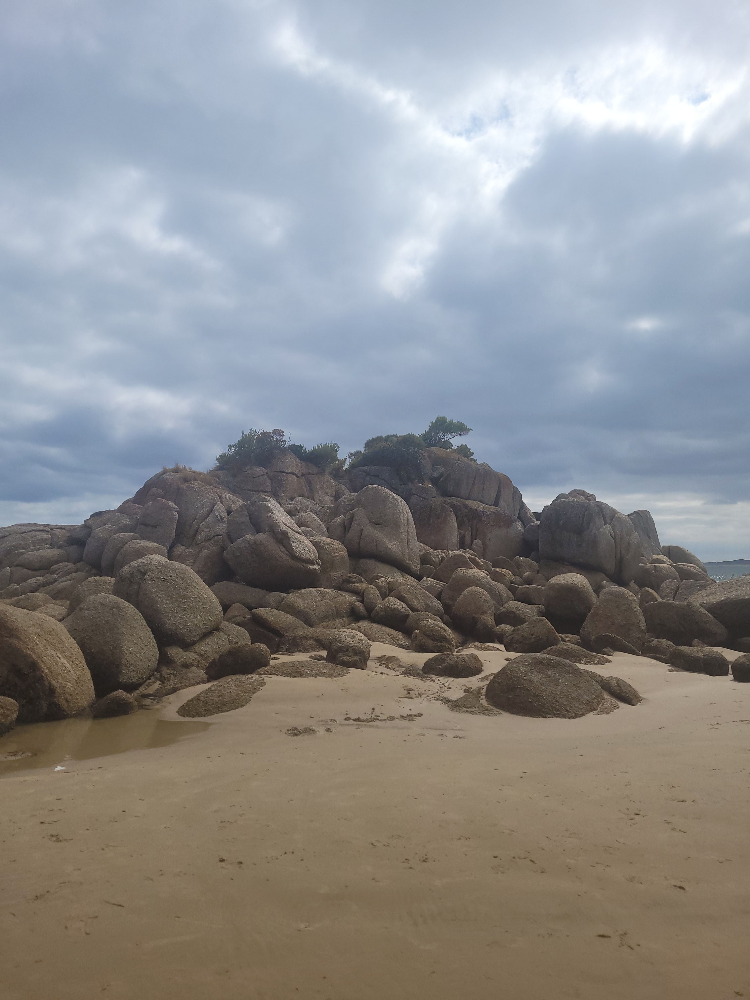

1. Shoot in RAW
Before you even start thinking of taking your photo is to set up your camera, the main setting that is a must change is RAW, RAW helps make the photo be more exposed to different editing abilitys and have a wider rage of colours to make your photo pop
2. Start wih basic adjustments
To overall make your photo look more profetional before we add the correct settings to make the photo have a matte look have a fiddle with these different settings:
• Exposure: Adjust to properly expose your image.
• Contrast: Decrease slightly to flatten the image.
• Highlights: Lower to retain detail in bright areas.
• Shadows: Increase to lift the dark areas.
• Whites: Lower to prevent bright areas from clipping.
• Blacks: Increase to lift the darkest parts of the image, contributing to the matte effect.
3. Tone Curve
The tone curve is crucial for creating the matte effect by lifting the black point and adjusting the overall tone, so heres how
Scroll down to the 'Tone Curve' panel. Click on the point curve icon and select 'Edit Point Curve'. Adjust the curve as follows:
Lift the Black Point: Click on the bottom-left point (black point) and drag it upwards. This lightens the shadows and creates the matte look.
Create a Subtle S-Curve: Click to add points in the midtones and highlights, creating a slight S-curve to maintain contrast.
4. Fine-Tuning the Tone Curve
Further fine-tuning helps to balance the matte effect and add contrast where needed.
Adjust the points on the curve to refine the look: Lift the shadows slightly more if needed. Adjust the midtones to maintain image detail. Enhance the highlights carefully to avoid losing the matte effect.
5. COLOR ADJUSTMENTS (OPTIONAL)
Adding a subtle color tone can enhance the mood of the matte look.
How to Do It:
• Go to the 'Color Grading' panel.
• Add a slight tint to the shadows and highlights:
• Shadows: Choose a cool tone like blue.
• Highlights: Choose a warm tone like yellow.
• Adjust the balance to your liking.
And now your Done! You can still add things like Split Toning and Vignetting but they are optional.


Some of my socials